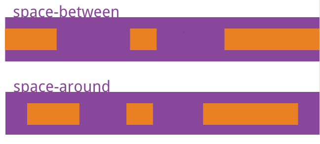

space-between与space-around的区别
这篇文章发布于 2019/11/15，归类于 CSS
标签：
space-between 间距，space-around怎么使用，space-between与space-around的区别，space-around什么意思，space-around，space-around 三个 不居中，space-around调距离，
flex布局justify-content属性值区别
- space-between 最左、最右item贴合左侧或右侧边框，item与item之间间距相等。
- space-around 每个item 左右方向的margin相等。两个item中间的间距会比较大
